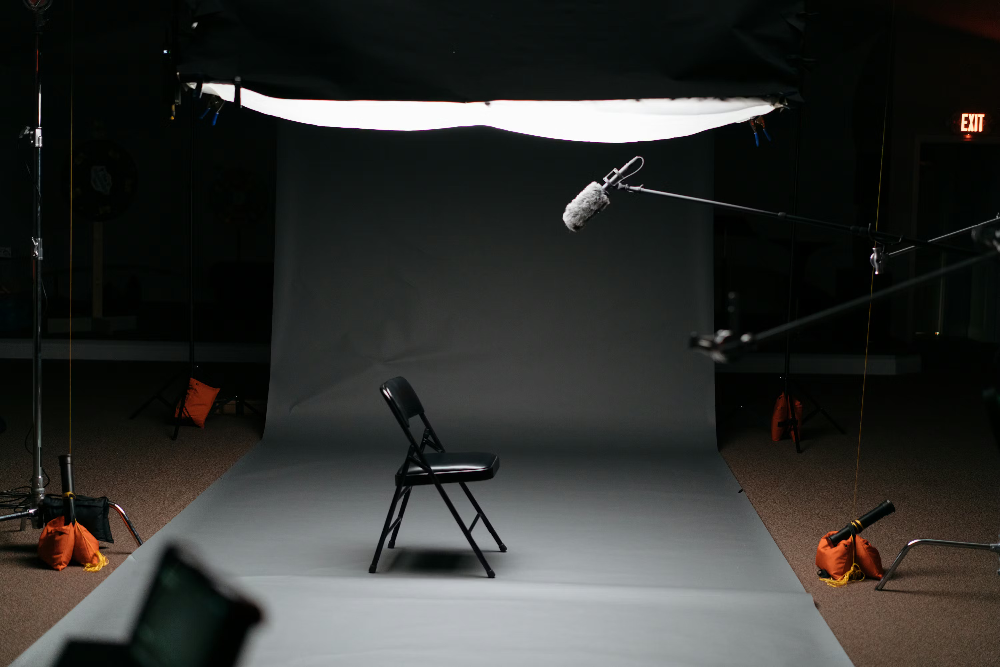
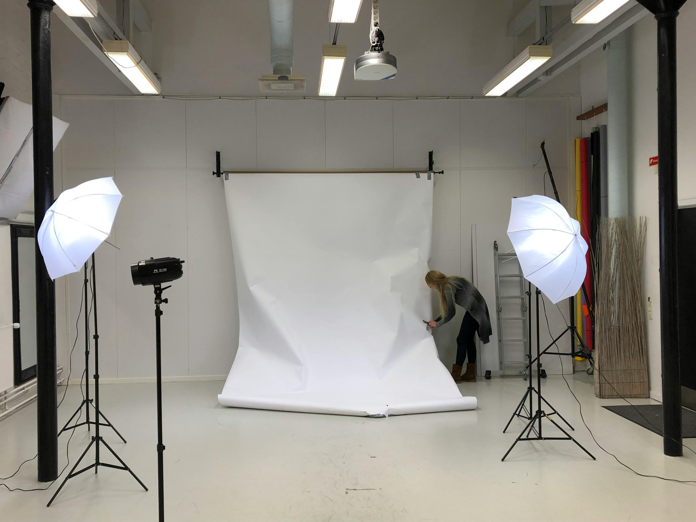

Elevate your brand with our state-of-the-art studio facilities and professional production team. From concept to final delivery, we provide comprehensive video and photography services designed to showcase your products and tell your brand story with stunning visual impact.

Our fully equipped photo and video studio is located at a prime commercial hub in Appa Balwant Chowk, Pune City, providing easy accessibility for clients across the city.
Designed for professional shoots, our studio features modern lighting, high-end cameras, backdrops, and sound control for flawless production.
Whether it’s product photography, corporate videos, interviews, or promotional shoots, our studio delivers consistent, premium-quality results.
Having a dedicated studio eliminates location limitations and ensures complete creative control over lighting, sound, and visual aesthetics.
Our central location makes it convenient for businesses, creators, and agencies to collaborate efficiently without logistical challenges.
We also provide on-site technical support, setup assistance, and post-production services for a seamless production experience.
